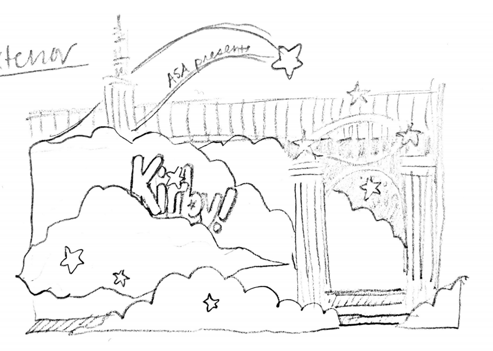
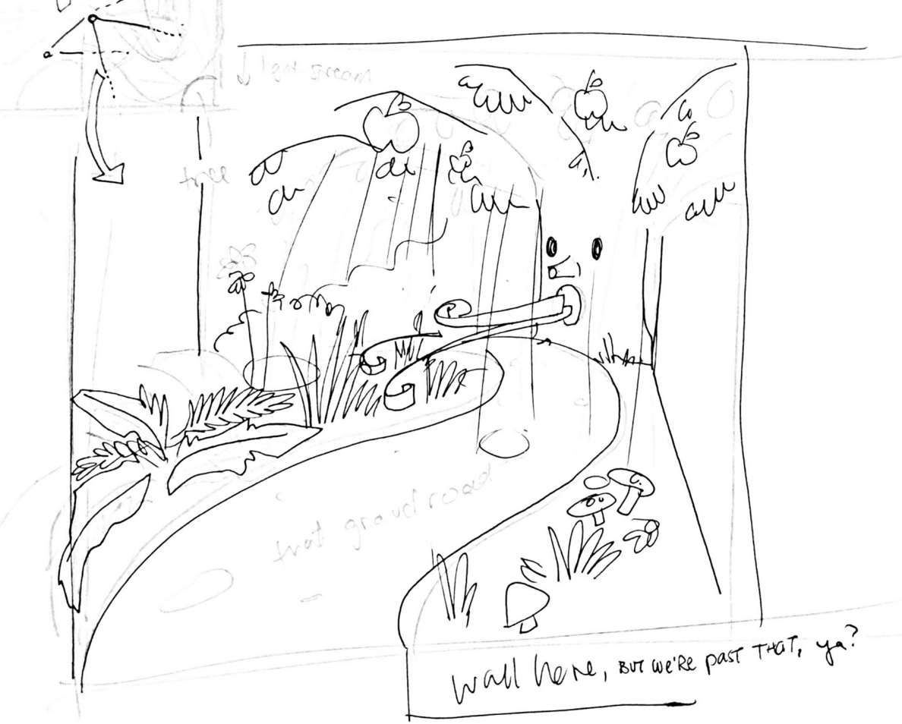
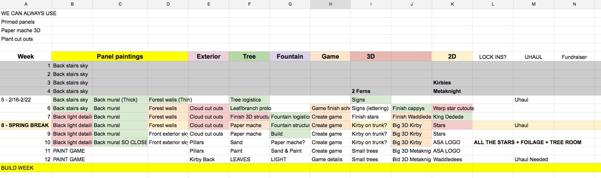
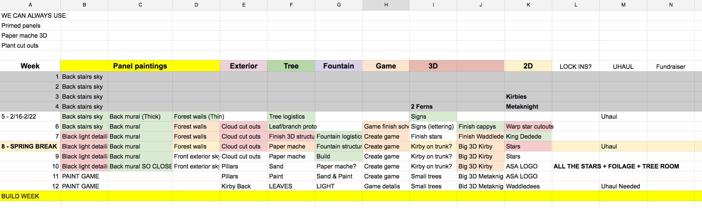
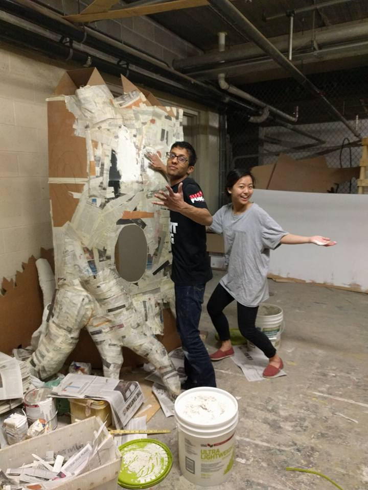
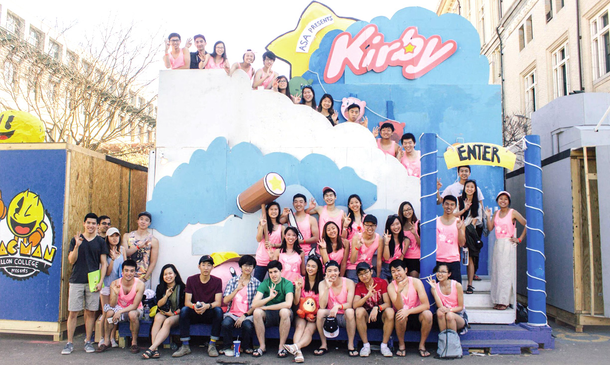

Medium, tools, and skills: Painting, wood, sculpture, design, prototyping, project management
When & where: September 2015 - August 2016, Carnegie Mellon University, Pittsburgh, Pennsylvania
Shout-out to: My co-chair, Alexander Yu
Summary: I led the design and construction of a large-scale two-story installation piece for my university's Spring Carnival. The final result was a themed walkthrough environment that emmersed visitors in a Kirby-inspired world.
Goal: Create a successfully immersive environment that is both visually appealing and structurally sound.
Spring Carnival is the time for many of the University's oldest traditions, including the building of Booths on Midway. These booths are interactive, playful, and designed for children, families, students, and alumni to walk through an experience a crafted world created by the student organizations on campus. I led the creation and design of a two-story themed installation to be constructed during Carnegie Mellon's annual Spring Carnival.
That year, our theme is Kirby - our contribution to the overall theme of 'Game Night': a theme that will turn our university's grounds into a habberdashery of board and video games.
Booth design starts from general sketches and whiteboard ideations in the early months.
  
These drawings are transformed into concrete blueprints and calculated spaces. The digital drawings are created in SketchUp / SolidWorks.


I then set-up a week-by-week timeline, and a week-by-week task sheet.
 

Next, over the course of many months, everything is built, painted, and made by a team of around thirty students.
 

Finally, all during one week in April, we move walls and stairs and painted panels all out to a parking lot where we build our final piece!


